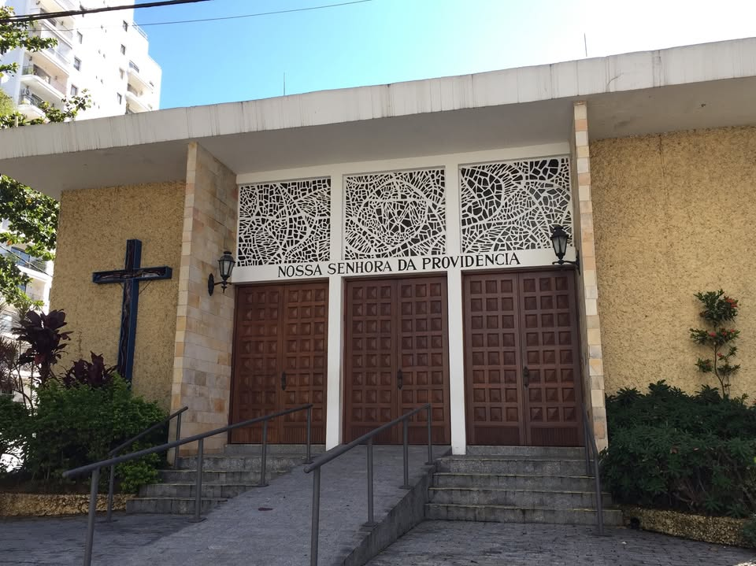
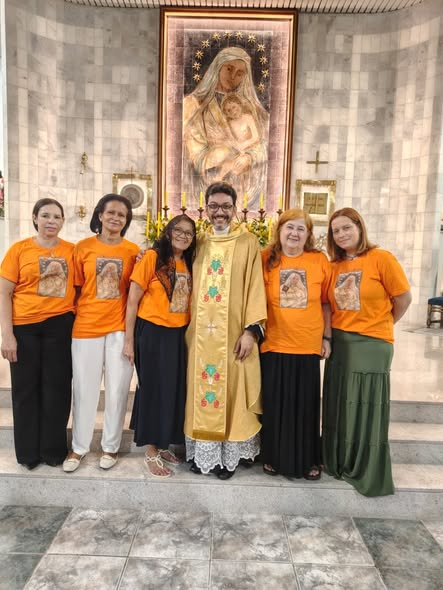
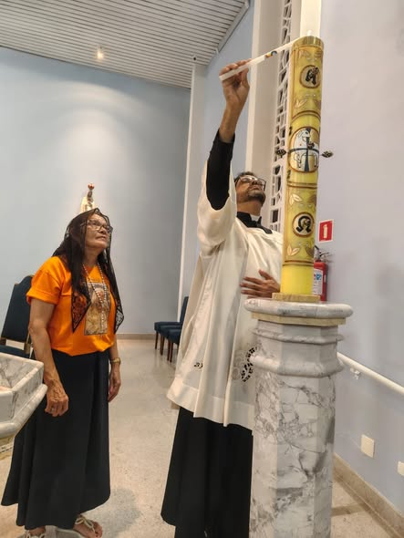
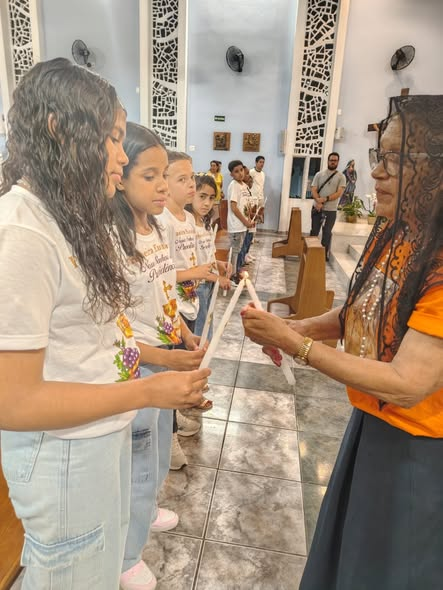
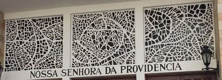
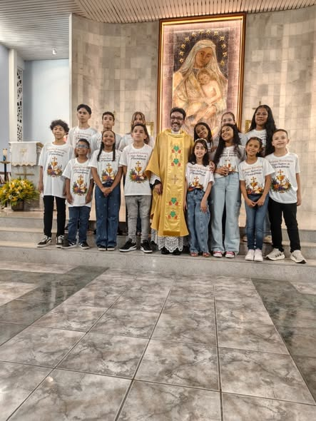
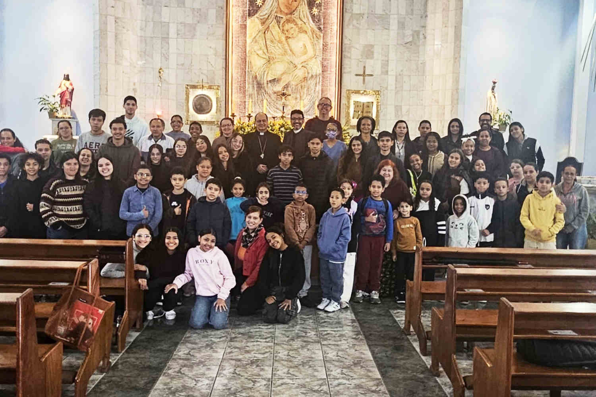
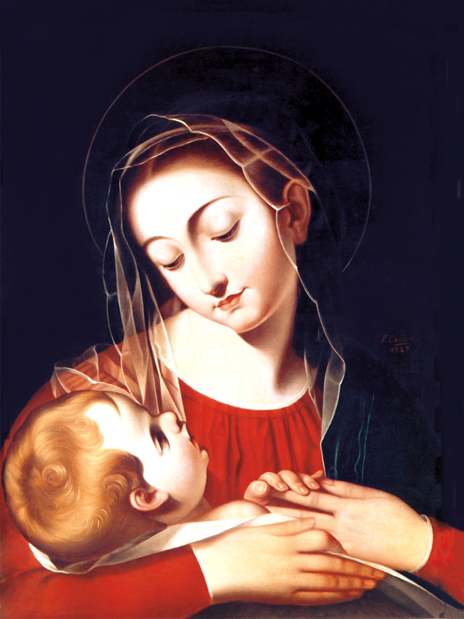
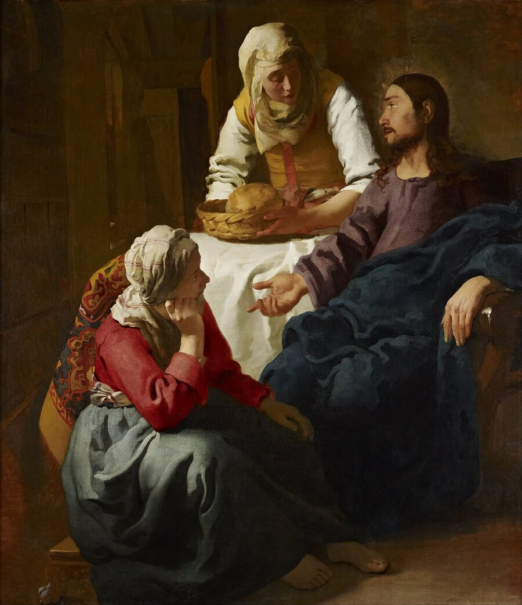

Missas na matriz
- Segunda
- Não consta
- Terça a sexta
- 19h
- Sábado
- 18h
- Domingo
- 9h, 11h e 18h30
No primeiro sábado do mês, também há Missa do Imaculado Coração de Maria às 11h. Na Comunidade Pio XII, a Missa de domingo é às 10h.
Venha celebrar a Missa, confessar-se ou rezar conosco.
Rua Visconde de Nacar, 46 · Real Parque

No primeiro sábado do mês, também há Missa do Imaculado Coração de Maria às 11h. Na Comunidade Pio XII, a Missa de domingo é às 10h.
Consulte a secretaria sobre a necessidade de agendamento.
Quinta, das 14h às 18h, com bênção solene.
Horários publicados pela Diocese de Campo Limpo · consultados em . Para mudanças e feriados, confirme com a secretaria.
Nenhum evento especial confirmado nesta demonstração. Para avisos e celebrações, consulte o Facebook da paróquia ou fale com a secretaria.
O bispo ouviu os paroquianos, visitou enfermos e presidiu a Missa na matriz. Relato da Diocese.
Os primeiros agentes foram enviados durante a Missa na matriz. Relato da Diocese.
O antigo site paroquial reuniu a programação da Semana Santa daquele ano. Ver o registro arquivado.
Pelo Batismo, renascemos como filhos de Deus e somos incorporados à Igreja (CIC 1213). A Diocese informa que há curso de Batismo na paróquia. Pergunte à secretaria sobre a preparação, os documentos e as datas.
Falar com a secretariaA Eucaristia é a fonte e o ápice da vida cristã (CIC 1324). A Diocese lista pré-catequese, catequese infantil, catequese de Crisma, catequese de adultos e Escola da Fé. Peça à secretaria as turmas e os horários.
Falar com a secretariaO Matrimônio é uma aliança para toda a vida que Cristo elevou, entre batizados, à dignidade de sacramento (CIC 1601). Se vocês vão se casar na Igreja, peçam à secretaria as orientações sobre preparação, documentos e datas.
Falar com a secretaria


Fotografias publicadas na página da paróquia no Facebook, sem data informada.
A comunidade se apresenta como Nossa Senhora da Providência e Santa Marta: duas padroeiras no nome. Sua história passa pela chegada dos Pavonianos a um Real Parque que ainda tinha poucas casas.
É a data oficial de criação registrada pela Diocese.
Já presentes no Brooklin, os religiosos escolhem o Real Parque, que tinha um povo carente e humilde, segundo a memória paroquial.
Nos anos 70 havia poucas casas, fazendas e zona rural. Nos anos 80, a comunidade carente cresce e o bairro atrai também famílias de alta renda.
Pe. Roberto Camilatto foi pároco nesse período de grandes mudanças. Ele lembrava da convivência entre paroquianos ricos e pobres.
O envio dos primeiros agentes dá início à Pastoral da Saúde na comunidade.
«Aqui é a casa de Nossa Senhora e através dela você pode encontrar o seu filho, Jesus.»Antigo site da paróquia





Fotografias: página da paróquia no Facebook, Diocese de Campo Limpo e Pastoral da Saúde, via Diocese.

O título de Mãe da Divina Providência está ligado à devoção dos Barnabitas em Roma. Estas são quatro passagens da vida de Maria, cada uma com sua virtude.
Maria acolhe o anúncio do anjo e se põe à disposição de Deus. A fé aqui toma a forma de uma resposta, mesmo sem conhecer todo o caminho. (Lc 1,26–38)
Como imitá-la: Antes de uma decisão, reze e pergunte qual é o primeiro passo fiel que você pode dar hoje.
Ao saber da gravidez de Isabel, Maria parte apressadamente e vai à sua casa. A caridade não espera que o outro venha pedir ajuda. (Lc 1,39–56)
Como imitá-la: Ligue para alguém que está passando por uma mudança e ofereça uma ajuda concreta.
Maria percebe a falta do vinho, leva a necessidade a Jesus e orienta os serventes a fazer o que ele disser. (Jo 2,1–11)
Como imitá-la: Reze por uma necessidade que alguém lhe contou e veja como pode ajudar sem chamar a atenção para si.
Maria permanece junto à cruz. Ali, Jesus confia sua mãe ao discípulo amado e o discípulo à sua mãe. (Jo 19,25–27)
Como imitá-la: Faça companhia a alguém que sofre, mesmo quando não houver nada que você possa resolver.
Nossa Senhora da Providência, rogai por nós.

Marta recebia Jesus em Betânia, com seus irmãos Maria e Lázaro. O Evangelho a mostra em quatro momentos, cada um com sua virtude.
Marta recebe Jesus em sua casa e se multiplica no serviço. Jesus a chama pelo nome e lembra que uma só coisa é necessária: ouvi-lo. (Lc 10,38–42)
Como imitá-la: Ao receber alguém em casa, sente-se por dez minutos para ouvi-lo antes de servir.
Marta corre ao encontro de Jesus e diz que, se ele estivesse ali, seu irmão não teria morrido. E acrescenta que Deus lhe dará o que ele pedir. (Jo 11,20–22)
Como imitá-la: Conte a Deus sua dor sem disfarçar e termine a oração com um pedido de confiança.
Diante da promessa de Jesus sobre a ressurreição, Marta responde que crê que ele é o Cristo, o Filho de Deus, que vinha ao mundo. (Jo 11,23–27)
Como imitá-la: No domingo, reze o Credo devagar, pensando em uma situação difícil que você entrega a Deus.
Seis dias antes da Páscoa, oferecem uma ceia a Jesus em Betânia, e Marta serve. Seu cuidado aparece nos gestos simples. (Jo 12,1–2)
Como imitá-la: Escolha uma tarefa escondida na comunidade, como arrumar ou preparar o café, e faça sem pedir reconhecimento.
Santa Marta, rogai por nós.
Cadastro diocesano · consultado em 26/11/2026.